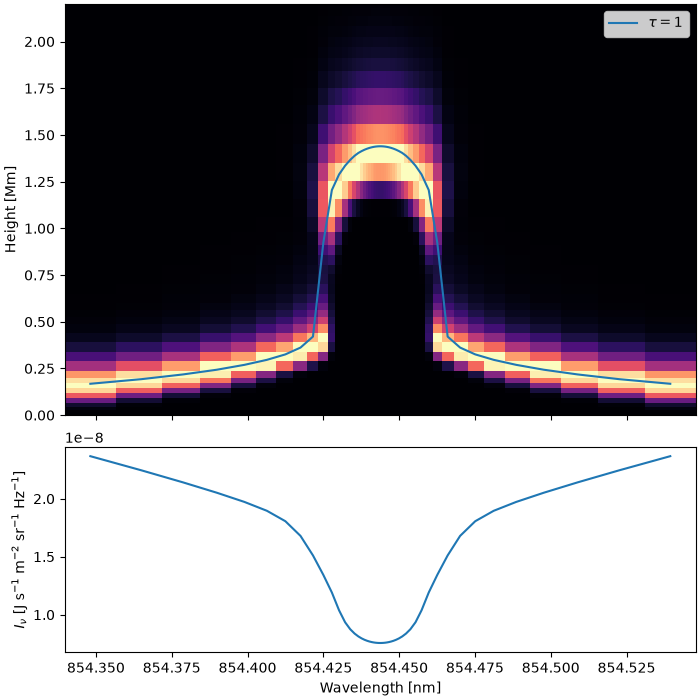

Note
Go to the end to download the full example code.
Contribution function and formation height of 854.2
After converging a simulation, the depth-dependent opacity and emissivity can be stored during a formal solution, and used to compute optical depths and contribution functions. Here we look at where the Ca II 854.2 nm line forms in the FAL C atmosphere.
import matplotlib.pyplot as plt
import numpy as np
import lightweaver as lw
from lightweaver.fal import Falc82
from lightweaver.rh_atoms import CaII_atom, H_6_atom
from lightweaver.utils import compute_contribution_fn, compute_tau, tau_isosurface
/home/runner/work/Lightweaver/Lightweaver/lw-docs-venv/lib/python3.12/site-packages/lightweaver/config.py:75: UserWarning: No config file found, using defaults. For optimised vectorised code, please run `lightweaver.benchmark()`, otherwise the most advanced instruction set supported by your machine will be picked, which may not be the fastest (due to e.g. aggressive AVX offsets).
warnings.warn('No config file found, using defaults. For optimised vectorised code,'
Converge the NLTE problem with H and Ca II active.
atmos = Falc82()
atmos.quadrature(5)
rad_set = lw.RadiativeSet([H_6_atom(), CaII_atom()])
rad_set.set_active('H', 'Ca')
spect = rad_set.compute_wavelength_grid()
eq_pops = rad_set.compute_eq_pops(atmos)
ctx = lw.Context(atmos, spect, eq_pops, Nthreads=2)
lw.iterate_ctx_se(ctx, quiet=True)
240
Ask the formal solver to store the full depth-dependent opacity and emissivity (ctx.depthData), then perform one more formal solution.
ctx.depthData.fill = True
ctx.formal_sol_gamma_matrices()
IterationUpdate(ctx=<lightweaver.Context object at 0x564c9450b700>, crsw=1.0, updatedJ=True, dJMax=0.004928092666046213, dJMaxIdx=308, updatedPops=False, dPops=[], dPopsMaxIdx=[], ngAccelerated=False, updatedNe=False, dNeMax=0.0, dNeMaxIdx=0, updatedRho=False, NprdSubIter=0, dRho=[], dRhoMaxIdx=[], updatedJPrd=False, dJPrdMax=[], dJPrdMaxIdx=[])
Compute the contribution function and optical depth for the outgoing ray with the largest mu (the last ray of the quadrature), and the height at which tau = 1 along this ray. These are computed for every wavelength of the simulation’s grid, so we select the points around 854.2.
mu = -1
cfn = compute_contribution_fn(ctx, mu=mu)
tau = compute_tau(ctx, mu=mu)
z = np.asarray(atmos.height)
tau1 = tau_isosurface(tau, z)
wavelength = np.asarray(ctx.spect.wavelength)
ca_8542 = 854.444
mask = np.abs(wavelength - ca_8542) < 0.1
wave = wavelength[mask]
I = np.asarray(ctx.spect.I)[mask, mu]
Integrating the contribution function over height gives the emergent intensity (up to the accuracy of this simple quadrature).
integrated = -np.trapezoid(cfn[mask], z, axis=1)
print(f'Max relative difference between integrated cfn and I: '
f'{np.max(np.abs(integrated - I) / I):.2e}')
Max relative difference between integrated cfn and I: 5.48e-02
Plot the contribution function (normalised at each wavelength) with the tau = 1 height overlaid, and the emergent profile below. The line core forms in the chromosphere, around 1.2 Mm higher than the wings.
z_mm = z / 1e6
fig, ax = plt.subplots(2, 1, figsize=(7, 7), sharex=True, height_ratios=[2, 1],
constrained_layout=True)
cfn_norm = cfn[mask] / cfn[mask].max(axis=1, keepdims=True)
ax[0].pcolormesh(wave, z_mm, cfn_norm.T, shading='auto', cmap='magma')
ax[0].plot(wave, tau1[mask] / 1e6, c='C0', label=r'$\tau = 1$')
ax[0].set_ylim(0, 2.2)
ax[0].set_ylabel('Height [Mm]')
ax[0].legend()
ax[1].plot(wave, I)
ax[1].set_xlabel('Wavelength [nm]')
ax[1].set_ylabel(r'$I_\nu$ [J s$^{-1}$ m$^{-2}$ sr$^{-1}$ Hz$^{-1}$]')
plt.show()

Total running time of the script: (0 minutes 25.496 seconds)